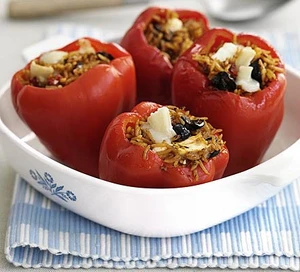

Stuffed Peppers

Description
A 15-minute supper that calls for just five ingredients and won't leave you feeling stuffed!
Ingredients
- 4 red peppers
- 2 x pouches cooked tomato rice
- 2 tbsp pesto
- Handful pitted black olives, chopped
- 200g goat's cheese, sliced
Method
- Use a small knife to cut the top out of 4 red peppers, then scoop out the seeds. Sit the peppers on a plate, cut-side up, and cook in the microwave on High for 5-6 mins until they have wilted and softened.
- While the peppers are cooking, mix two 250g pouches cooked tomato rice together with 2 tbsp pesto and a handful of chopped pitted black olives and 140g of the sliced goat's cheese.
- Scoop the rice, pesto, olives and goat's cheese mix into the peppers, top with the remaining 60g sliced goat’s cheese and continue to cook for 8-10 mins.